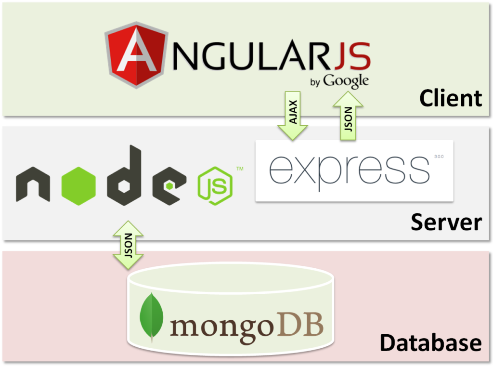

Node.js: Javascript on Your Server
By Stanley Lin
Brief History
- Originally created by Ryan Dahl in 2009
- Dahl was critical of the most popular web server at the time, Apache HTTP Server
- Couldn’t handle more than 10,000 connections
- Code usually was synchronous, blocked (paused) processes
- Inspired to create Node.js after seeing a progress bar on Flickr
- Didn’t know file upload progress, so had to constantly query the server
Uses
- Javascript is client side: only runs in the webpage
- Write server side code in Javascript!
- Tons of modules built in
- Practically everything is nonblocking
Javascript Classes Do Exist!
- Works pretty much like any other Object-Oriented language
class Foo {
//stuff
}
Current Events
- Node is “event-driven”
- Objects emit these whenever anything of interest happens
- If listeners attached, will trigger them
The EventEmitter class
- Has an internal array of listeners for each event
- Extend from this class
- Synchronous
Methods
on( eventName, listener )- Appends listener to the end of the listeners array for
eventName
emit( eventName[, args…] )- Triggers any event listeners tied to
eventName, providing it with args
Live Streaming
- An "interface for working with streaming data in Node.js.”
- Readable, Writable, Duplex, Transform
The stream.Readable class
Events
"data" (chunk)- Emitted whenever a
chunk of data is available to use
"end" ()- Emitted when a stream has no more data
Methods
pipe(destination)- Redirects data to the
destination stream (a Writable stream)
The stream.Writable class
Events
"finish" ()- Emitted after
end() has been called
Methods
write(chunk)- Adds a
chunk of data to the stream
end(chunk)- Writes
chunk, then closes the stream to writing. Will emit the "finish" event
Nothing but Net
- An asynchronous API for creating stream-based TCP or IPC servers
- Low level
- Servers and sockets
- Sockets are the endpoints if a connection
Methods
net.createServer()- Returns a new instance of
net.Server
The net.Server class
Events
"listening" ()- Emitted after
listen() has been called
"close" ()- Emitted when the server stops accepting connections
Methods
address()- Returns an object with the following format:
{port: <number>, family: <string>, address: <string>}
listen([port][, host])- Starts a server and begins listening for connections
close()- Stops accepting connections and closes when all connections end. Emits the
"close" event
HTTP: All Together Now
- Higher level than net, handles HTTP protocol
- Requests, responses
The http.IncomingMessage class
- Implements stream.Readable
Properties
message.headers- An object containing the HTTP headers
message.method- The HTTP method used as a string
The http.ServerResponse class
- Implements stream.Writable, but doesn’t inherit from it
Events
"close" ()- Emitted when a connection was closed before
end() was called
"finish" ()- Emitted after
end() has been called
Methods
write(chunk)- Adds a
chunk of data to the stream
listen([port][, host])- Starts a server and begins listening for connections
end(chunk)- Writes
chunk, then closes the stream to writing. Will emit the "finish" event
The http.Server class
Events
“request” (request, response)request is a IncomingMessage, response is a ServerResponse"finish" ()- Emitted after
end() has been called
MEAN Machine
- A commonly used software stack for web app development
- Mongo (the database), Express (web framework), Angular (for frontend), Node (for backend)

The MEAN stack
There’s a Library for that
- NPM!
- A Javascript package manager (works like pip from python)
- Angular, Express, and the Mongo Javascript Driver are all on npm
- Fun fact: NPM is not officially an acronym for anything
- Node Package Manager?
- Nearly Pure Mustard?
- Nutella Peanut-butter Marshmallow?